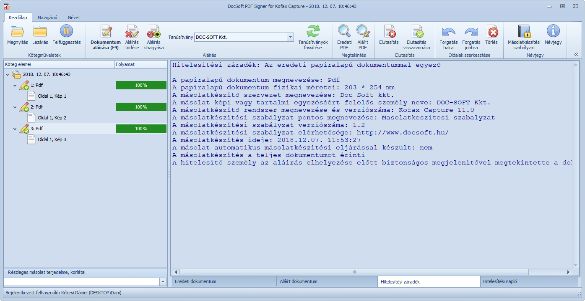
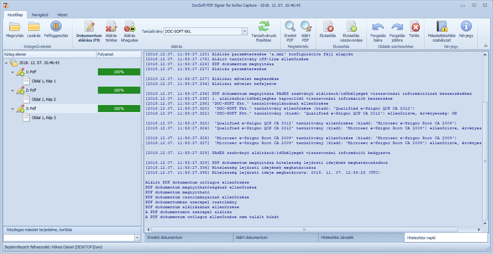

A PDF Signer for Tungsten Capture modul indulásakor az alábbi felhasználói felület jelenik meg.
PDF Signer for Tungsten Capture modul fő képernyője
A felhasználói felület az alábbi fő részekből áll:
Az ikonsor az alábbi fülekből áll:
Köteg megnyitása (Ctrl+O): megnyitja a Köteg megnyitása ablakot, ahol a várakozó kötegek közül kiválasztható a hitelesíteni kívánt köteg, vagy üzenetet jelenít meg, ha nincs várakozó köteg.
Köteg lezárása (Ctrl+L): lezárja az aktuális köteget, vagy felfüggeszti, ha nincs minden hitelesítésre várakozó dokumentum aláírva.
Köteg felfüggesztése (Ctrl+S): felfüggeszti az aktuális kötegfeldolgozását.
Dokumentum aláírása (F9): a tartalmi vagy formai egyezőség ellenőrzését követően ezt a gombot megnyomva elindítható a hitelesítési folyamat.
Figyelem! A hitelesítés módjától és a külső szolgáltatók sebességének függvényében a művelet iratonként akár 1 percet is igénybe vehet.
Figyelem! A PDF Signer for Tungsten Capture modul 32 bites (a Tungsten Capture rendszer limitációi miatt), ezért a hitelesíthető fájlméret korlátozott! A hitelesíthető fájlméret függ a PDF állomány képi tartalmától is: színes oldalakat tartalmazó állományok esetén a hitelesíthető fájlméret jelentősen csökken, mivel a megtekintőben megnyitott állományok jelentős mennyiségű memóriát foglalnak! Általánosságban elmondható, hogy csak 1 bites fekete-fehér oldalakat tartalmazó dokumentumból kb. 1500 oldalas hitelesíthető, míg színes oldalak esetén 70-80 (A/4, 300 dpi esetén)! Ezek a számok csak nagyságrendi becslések, a hitelesíthető dokumentumméret ezen felül függ az operációs rendszertől (32 vagy 64 bites), a munkaállomás memóriájának méretétől és az elérhető szabad memória töredezettségétől.
Aláírás törlése: eltávolítja az aláírt dokumentumot a rendszerből. Az eredeti, aláírás nélküli dokumentum továbbra is rendelkezésre áll ismételt aláírásra.
Aláírás kihagyása: kihagyja az aktuális, hitelesítendő dokumentum aláírását, amennyiben a dokumentumosztály beállításai közt engedélyezte ezt a funkciót az adminisztrátor. A gombot megnyomva
Tanúsítványok frissítése: frissíti a kliens oldali hitelesítéshez használható tanúsítványok listáját, pl. smart card kártyaolvasóba történő behelyezését követően.
Eredeti PDF megtekintése: megnyitja az aláírás nélküli, eredeti PDF fájlt a társított külső alkalmazásban.
Aláírt PDF megtekintése: megnyitja az aláírt PDF fájlt (ha létezik) a társított külső alkalmazásban.
Dokumentum/oldal elutasítása (F5): Elutasítja az aktuális dokumentumot vagy oldalt. Az elutasítás eredményeként a dokumentumon történt aláírások és az aláírt fájl törlésre kerül, és a dokumentum a Quality Control modulba kerül. Az elutasítás okát a gomb megnyomását követően az Elutasítás ablakban kell megadni.
Dokumentum/oldal elutasításának visszavonása (F6): visszavonja a kiválasztott dokumentum vagy oldal elutasítását. Az elutasítás visszavonása a eltünteti az elutasítási jelzést a dokumentumról. Ha a dokumentumot hitelesíteni szükséges, akkor a köteg lezárása előtt aláírást kell rajta elhelyezni.
Forgatás balra: balra forgatja a hitelesítendő dokumentum kiválasztott oldalát.
Forgatás jobbra: balra forgatja a hitelesítendő dokumentum kiválasztott oldalát.
Törlés (Del): törli a hitelesítendő dokumentum kiválasztott oldalát. A modulban dokumentum nem törölhető, csak egyes oldalak. Minden dokumentumnak legalább egy oldalból kell állnia, ezért az utolsó oldal nem törölhető.
Amennyiben hitelesítést követően történik javítás, úgy az adott dokumentumról minden aláírás törlésre kerül és az iratot ismét hitelesíteni kell.
Figyelem! A fenti javítási funkciók csak akkor érhetőek el, ha a dokumentumosztálynál az Advanced Viewer-t állította be az adminisztrátor.
Másolatkészítési szabályzat: megjeleníti a kiválasztott dokumentumhoz tartozó másolatkészítési szabályzatot az alapértelmezett böngészőben.
Névjegy: megjeleníti a PDF Signer for Tungsten Capture névjegyét.
Ugrás az előző oldalra (F7): a kiválasztott dokumentum előző oldalára ugrik.
Ugrás a következő oldalra (F8): a kiválasztott dokumentum következő oldalára ugrik.
Ugrás az előző dokumentumra (F3): a kötegben lévő előző dokumentum első oldalára ugrik.
Ugrás a következő dokumentumra (F4): a kötegben lévő következő dokumentum első oldalára ugrik.
Ugrás az első dokumentumra: a köteg első dokumentumának első oldalára ugrik.
Ugrás az utolsó dokumentumra: a köteg utolsó dokumentumának első oldalára ugrik.
Teljes oldal mutatása (Ctrl+0): a teljes oldal egyszerre látható a dokumentum-megtekintőben.
Oldalszélességhez igazítás (Ctrl+1): a dokumentum széltében teljesen kitölti a dokumentum-megtekintő ablakot.
Nagyítás eredeti méretre: dokumentum mutatása eredeti méretben.
Közelítés (Ctrl++): dokumentum nagyítása a dokumentum-megtekintőben.
Távolítás (Ctrl+-): dokumentum kicsinyítése a dokumentum-megtekintőben.
Oldalankénti nézet: a dokumentum-megtekintőben egyszerre egy oldal megjelenítése.
Kétoldalas nézet: a dokumentum-megtekintőben egymás mellett két oldal jelenik meg.
Felhasználói felület visszaállítása: a felhasználói felület méreteinek és kinézetének visszaállítása alapértelmezettre.
Ezen a panelen fastruktúrába rendezve látható az aktuálisan megnyitott köteg tartalma. A panelen három szinten jelennek meg ikonok:
A fastruktúrában az alábbi ikonok jelenhetnek meg:
Köteg: az ikon mellett a szkenneléskor megadott kötegnév látható.
Hitelesítendő dokumentum: az iratot kötelező hitelesíteni ahhoz, hogy a köteg sikeresen lezárható legyen.
Hitelesített dokumentum: a dokumentum a papíralapú eredeti hiteles másolata.
Hitelesítendő, de kihagyott dokumentum: olyan irat, melyet hitelesíteni kell, de a hitelesítést úgy hagyta ki a felhasználó, hogy az aláíratlan iratot szeretné továbbítani. A kihagyott irat eredeti, hitelesítés nélküli, formájában kerül továbbításra a célrendszer felé.
Hitelesítendő, de kihagyott: olyan irat, melyet hitelesíteni kell, de elutasításra került. A köteg vagy az elutasított irat a Tungsten Capture hibakezelő (Quality Control) moduljába kerül.
Hitelesíthető (de nem kötelezően hitelesítendő) dokumentum: az irat hitelesíthető, de nem kötelező ezt a műveletet végrehajtani. A köteg lezárható ha az irat nincs hitelesítve.
 Hitelesíthető, de elutasított dokumentum: opcionálisan hitelesíthető irat, amely elutasításra került.
Hitelesíthető, de elutasított dokumentum: opcionálisan hitelesíthető irat, amely elutasításra került.
Nem hitelesíthető dokumentum: olyan irat, melyen nem lehet aláírást lehelyezni.
Nem hitelesíthető és elutasított dokumentum: olyan irat, melyen nem lehet aláírást lehelyezni és el is lett utasítva.
Oldal: dokumentumhoz tartozó oldal.
Elutasított oldal: dokumentumhoz tartozó, elutasított oldal
A megtekintő panel az alábbi fülekből áll:
Ezen a fülön lehet látni a dokumentum aláírás előtti állapotát. Az iraton a módosító műveletek (forgatás, törlés) eredménye azonnal látható.
Ezen a fülön lehet megtekinteni az aláírt dokumentumot (amennyiben létezik), ahogy a hitelesítéskori állapotában létezett.
Ezen a fülön lehet megtekinteni az aláírt dokumentumhoz (amennyiben létezik) tartozó hitelesítési záradékot.

PDF Signer for Tungsten Capture hitelesítési záradék képernyője
Ezen a fülön lehet megtekinteni az aláírt dokumentumhoz (amennyiben létezik) tartozó legutolsó hitelesítési naplót. Ebben a naplóban található minden információ, ami a hibakezeléshez és az auditáláshoz szükséges. Amennyiben a hitelesítő komponens a PDF Streamer, akkor a naplóadatok a PDF Streamer szerverén is naplózásra kerülnek.

PDF Signer for Tungsten Capture hitelesítési napló képernyője
A panel csak akkor érhető el, ha az adminisztrátor az Advanced viewer-t állította be a dokumentumosztálynál.
Ezen a panelen lehet megtekinteni a kiválasztott dokumentum oldalainak előnézeti képeit. A panelen automatikusan az eredeti vagy az aláírt irat oldalai láthatóak, attól függően, hogy a megtekintő panelen melyik fül van megnyitva.
Copyright © 2025. Doc-Soft Kkt. Minden jog fenntartva.